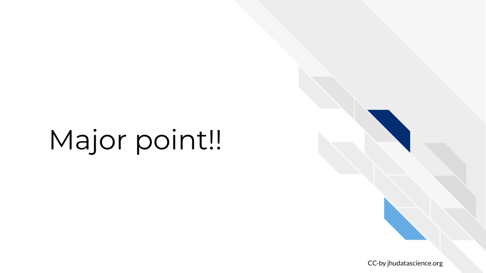

library(magrittr)A new chapter
*If you haven’t yet read the getting started Wiki pages; start there
Every chapter needs to start out with this chunk of code:
Learning Objectives
*Every chapter also needs Learning objectives that will look like this:
This chapter will cover:
- {You can use https://tips.uark.edu/using-blooms-taxonomy/ to define some learning objectives here}
- {Another learning objective}
Libraries
For this chapter, we’ll need the following packages attached:
*Remember to add any additional packages you need to your course’s own docker image.
Topic of Section
You can write all your text in sections like this!
Subtopic
Here’s a subheading and some text in this subsection!
Code examples
You can demonstrate code like this:
output_dir <- file.path("resources", "code_output")
if (!dir.exists(output_dir)) {
dir.create(output_dir)
}And make plots too:
hist_plot <- hist(iris$Sepal.Length)
You can also save these plots to file:
png(file.path(output_dir, "test_plot.png"))
hist_plot$breaks
[1] 4.0 4.5 5.0 5.5 6.0 6.5 7.0 7.5 8.0
$counts
[1] 5 27 27 30 31 18 6 6
$density
[1] 0.06666667 0.36000000 0.36000000 0.40000000 0.41333333 0.24000000 0.08000000
[8] 0.08000000
$mids
[1] 4.25 4.75 5.25 5.75 6.25 6.75 7.25 7.75
$xname
[1] "iris$Sepal.Length"
$equidist
[1] TRUE
attr(,"class")
[1] "histogram"dev.off()quartz_off_screen
2 Image example
How to include a Google slide. It’s simplest to use the ottrpal package:

But if you have the slide or some other image locally downloaded you can also use html like this:
Video examples
To show videos in your course, you can use markdown syntax like this:
Alternatively, you can use knitr::include_url() like this: Note that we are using echo=FALSE in the code chunk because we don’t want the code part of this to show up. If you are unfamiliar with how R Markdown code chunks work, read this.
OR this works:
Links to files
This works:
Or this:
Links to websites
Examples of including a website link.
This works:
Citation examples
We can put citations at the end of a sentence like this [@rmarkdown2021]. Or multiple citations [@rmarkdown2021, @Xie2018].
but they need a ; separator [@rmarkdown2021; @Xie2018].
In text, we can put citations like this @rmarkdown2021.
FYI boxes
Please click on the subsection headers in the left hand navigation bar (e.g., 2.1, 4.3) a second time to expand the table of contents and enable the scroll_highlight feature (see more).
Dropdown summaries
You can hide additional information in a dropdown menu
Here’s more words that are hidden.Print out session info
You should print out session info when you have code for reproducibility purposes.
devtools::session_info()─ Session info ───────────────────────────────────────────────────────────────
setting value
version R version 4.1.2 (2021-11-01)
os macOS Big Sur 10.16
system x86_64, darwin17.0
ui X11
language (EN)
collate en_US.UTF-8
ctype en_US.UTF-8
tz America/New_York
date 2022-04-22
pandoc 2.14.1 @ /usr/local/bin/ (via rmarkdown)
─ Packages ───────────────────────────────────────────────────────────────────
package * version date (UTC) lib source
cachem 1.0.6 2021-08-19 [1] CRAN (R 4.1.0)
callr 3.7.0 2021-04-20 [1] CRAN (R 4.1.0)
cli 3.1.0 2021-10-27 [1] CRAN (R 4.1.0)
crayon 1.5.0 2022-02-14 [1] CRAN (R 4.1.2)
curl 4.3.2 2021-06-23 [1] CRAN (R 4.1.0)
desc 1.4.0 2021-09-28 [1] CRAN (R 4.1.0)
devtools 2.4.3 2021-11-30 [1] CRAN (R 4.1.0)
digest 0.6.29 2021-12-01 [1] CRAN (R 4.1.0)
ellipsis 0.3.2 2021-04-29 [1] CRAN (R 4.1.0)
evaluate 0.14 2019-05-28 [1] CRAN (R 4.1.0)
fansi 0.5.0 2021-05-25 [1] CRAN (R 4.1.0)
fastmap 1.1.0 2021-01-25 [1] CRAN (R 4.1.0)
fs 1.5.2 2021-12-08 [1] CRAN (R 4.1.0)
glue 1.6.0 2021-12-17 [1] CRAN (R 4.1.0)
highr 0.9 2021-04-16 [1] CRAN (R 4.1.0)
hms 1.1.1 2021-09-26 [1] CRAN (R 4.1.0)
htmltools 0.5.2 2021-08-25 [1] CRAN (R 4.1.0)
htmlwidgets 1.5.4 2021-09-08 [1] CRAN (R 4.1.0)
httr 1.4.2 2020-07-20 [1] CRAN (R 4.1.0)
jsonlite 1.7.2 2020-12-09 [1] CRAN (R 4.1.0)
knitr 1.37 2021-12-16 [1] CRAN (R 4.1.0)
lifecycle 1.0.1 2021-09-24 [1] CRAN (R 4.1.0)
magrittr * 2.0.1 2020-11-17 [1] CRAN (R 4.1.0)
memoise 2.0.1 2021-11-26 [1] CRAN (R 4.1.0)
ottrpal 1.0.1 2022-03-03 [1] CRAN (R 4.1.2)
pillar 1.6.4 2021-10-18 [1] CRAN (R 4.1.0)
pkgbuild 1.3.1 2021-12-20 [1] CRAN (R 4.1.0)
pkgconfig 2.0.3 2019-09-22 [1] CRAN (R 4.1.0)
pkgload 1.2.4 2021-11-30 [1] CRAN (R 4.1.0)
prettyunits 1.1.1 2020-01-24 [1] CRAN (R 4.1.0)
processx 3.5.2 2021-04-30 [1] CRAN (R 4.1.0)
ps 1.6.0 2021-02-28 [1] CRAN (R 4.1.0)
purrr 0.3.4 2020-04-17 [1] CRAN (R 4.1.0)
R6 2.5.1 2021-08-19 [1] CRAN (R 4.1.0)
readr 2.1.1 2021-11-30 [1] CRAN (R 4.1.0)
remotes 2.4.2 2021-11-30 [1] CRAN (R 4.1.0)
rlang 0.4.12 2021-10-18 [1] CRAN (R 4.1.0)
rmarkdown 2.11 2021-09-14 [1] CRAN (R 4.1.0)
rprojroot 2.0.2 2020-11-15 [1] CRAN (R 4.1.0)
sessioninfo 1.2.2 2021-12-06 [1] CRAN (R 4.1.0)
stringi 1.7.6 2021-11-29 [1] CRAN (R 4.1.0)
stringr 1.4.0 2019-02-10 [1] CRAN (R 4.1.0)
testthat 3.1.1 2021-12-03 [1] CRAN (R 4.1.0)
tibble 3.1.6 2021-11-07 [1] CRAN (R 4.1.0)
tzdb 0.2.0 2021-10-27 [1] CRAN (R 4.1.0)
usethis 2.1.5 2021-12-09 [1] CRAN (R 4.1.0)
utf8 1.2.2 2021-07-24 [1] CRAN (R 4.1.0)
vctrs 0.3.8 2021-04-29 [1] CRAN (R 4.1.0)
withr 2.4.3 2021-11-30 [1] CRAN (R 4.1.0)
xfun 0.29 2021-12-14 [1] CRAN (R 4.1.0)
[1] /Library/Frameworks/R.framework/Versions/4.1/Resources/library
──────────────────────────────────────────────────────────────────────────────